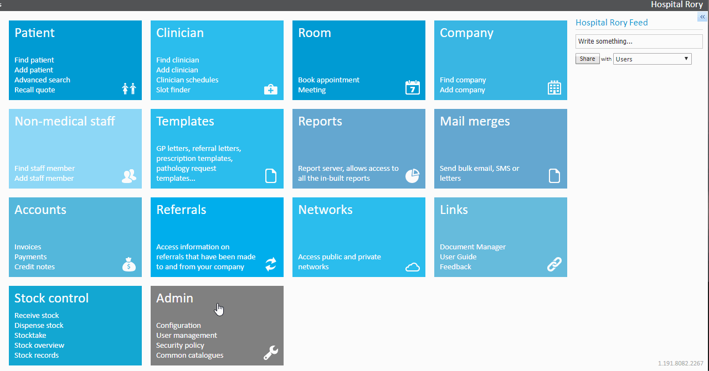
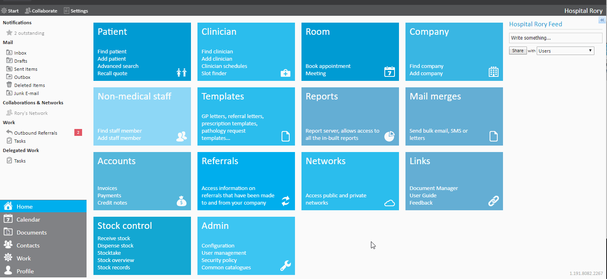
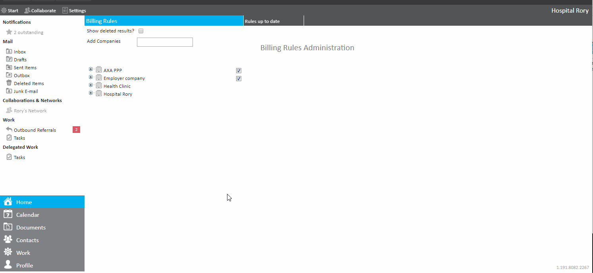
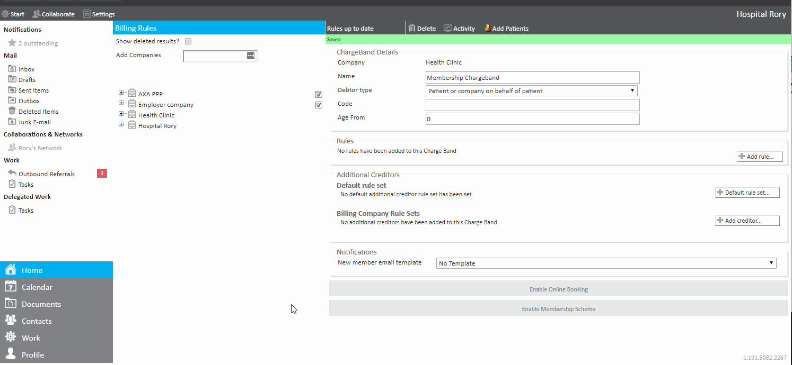
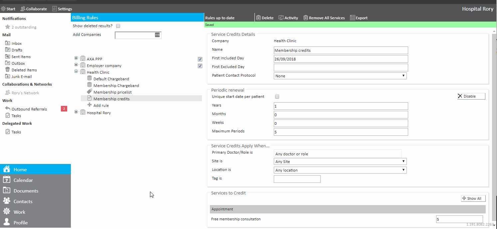

The Service Credits Rule is a billing rule which limits the number of times a service can be applied within a specified time frame. These can be used to offer patients free or discounted service/appointments over a renewable time period.
This article:
The Service Credit Rule can best be thought of as a 'temporary' Provide Services Rule. So, if perhaps you add a Service Credit Rule that allows 1 'Initial Consultation' within a one year period, it will provide that appointment type to be selected for any patient that has not had an 'Initial Consultation' within the given period. Once a patient has their 'Initial Consultation', this pseudo Provide services rule disappears and the appointment type can no longer be selected.
An important note is that this rule does not work well with an actual Provide Services Rule. For example, if you have your above Service Credit Rule as the first rule on your Charge Band, and a Provide Services Rule below it that does allow 'Initial Consultation'. The Service Credit Rule will be rendered obsolete, as it will not deny services, only not explicitly provide them. So if a patient has an 'Initial Consultation', the Service Credit Rule will no longer provide the appointment, but it won't deny it, which allows the Provide Services Rule to allow the appointment. You often do not want a Provide Service Rule and a Service Credit Rule on the same Charge Band specifying the same appointments/services.
When creating a Service Credit Rule, you must choose a Credit Type to decide how the credits are applied. There are 2 types:
Fixed Amount of Credits:
For example, a patient is given 5 free Physiotherapy Sessions per year. Once all 5 are used, they cannot book another free session until the year resets.
*Minimum Booking Interval:
For example, a patient books a Health Assessment in March 2025. Their next eligible booking is from March 2026. If they do not book in March 2026, the credit remains available until they use it.
When you are creating or updating Service Credit Rules, there is a range of fields on the page. An explanation of these is summarised below.
| Field/ Feature | Explanation |
| Service Credit Details | |
| Company | The company to which the Service Credit rule belongs. |
| Credit Type* | Set the type of credit allocation for the rule within the specified time frame: Fixed Amount of Credits – Gives patients a set number of appointments within a defined time period. Once used, the credit expires until the period resets. Minimum Booking Interval – Controls how often a patient can book the appointment type. The interval resets from the date of the last appointment, and credits remain available until used. |
| Name | The descriptive name for the Service Credit rule. |
| First Included Day | The date from which the service credit rule is valid. |
| First Excluded Day | The date from which the service credit rule is no longer valid. |
| Minimum interval if credit type is Minimum Booking Interval | |
| Years | Sets the interval length between bookings in Years. |
| Months | Sets the interval length between bookings in Months. |
| Weeks | Sets the interval length between bookings in Weeks. |
| Periodic renewal if credit type is Fixed Amount of credits | |
| Unique start date per patient | When ticked, a unique start date for the service credit is applied for the patient, so they have their own renewal period for service credits. |
| Years | The period in years during which the service credit renews after they were added to the Charge Band. |
| Months | The period in months when the service credit renews after they were added to the Charge Band. |
| Weeks | The period in weeks when the service credit renews after they were added to the Charge Band. |
| Maximum periods | The maximum number of times a Service Credit rule can be renewed. |
| Service Credits Apply When... | |
| Primary Doctor / Role is | Enables the restriction of the Service Credit rule to a specific doctor. By default, this is unrestricted to Any doctor or role. |
| Site is | Enables the restriction of the Service Credit rule to a specific site. By default, this is unrestricted to Any site. |
| Location is | Enables the restriction of the Service Credit rule to a specific location. By default, this is unrestricted to Any location. |
| Tag is | Enables the restriction of the Service Credit rule to a specific Billing tag for a session. By default, this is unrestricted. |
| Services to Credit | |
Defines which services the rule applies to:
| |
To show you how to set up the feature, we'll step through a walk-through example. It will illustrate how customers who are part of a membership Charge Band can receive 5 free consultations per year.
To do this:
The new Charge Band is automatically saved.

To do this:
The new appointment type is saved.

To do this:

To do this:
In this example by populating the box with '5', the patient has access to a maximum of 5 appointments of this type in 1 year.

To do this:

The different features of the Service Credit Rules page are explained below.
Now the Charge Band has been created it is possible to link to patients who are eligible. To do this:
To summarise what we've done - we have created a new Charge Band which we can assign to our patients, this Charge Band will allow that patient to book 5 free appointments per year, the other appointments and services will still be available for them to book (as I have added other default Price Lists into that charge band).